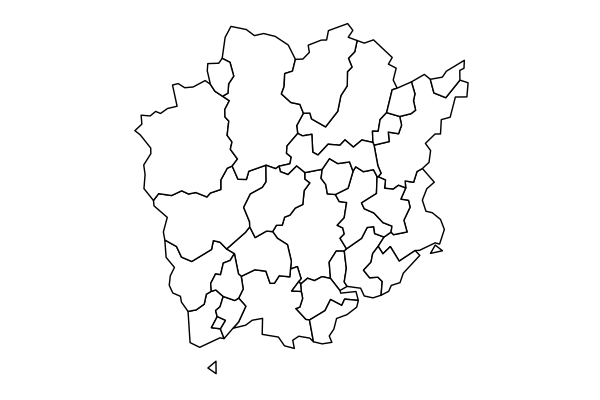
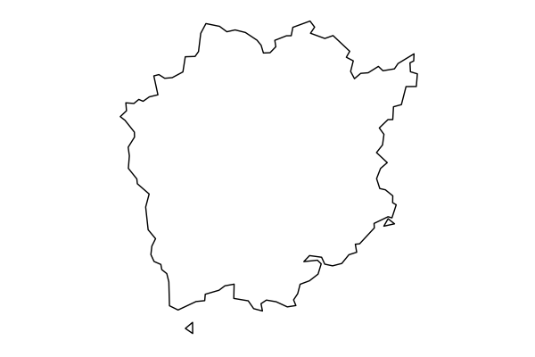
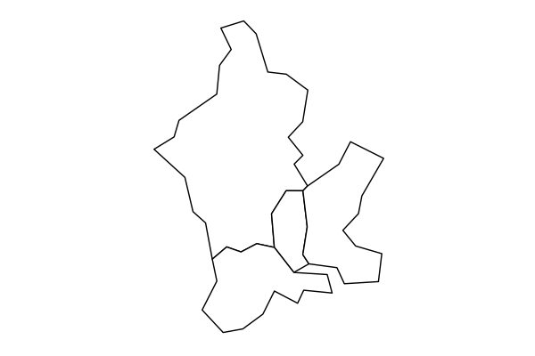

jpndistrict: 日本の行政区域地図を容易に描画するパッケージ
日本の行政区域地図を容易に描画するためパッケージを作っています。基本関数の使い方を説明します。
一人R + GISアドベントカレンダーの1日目です。初日は自作パッケージの話をします。
現在、タイトルにあるように日本の行政区域地図を容易に描画するための{jpndistrict}というパッケージを開発中です。このパッケージの基本的な使い方について紹介します。
開発の動機
市区町村境界ある都道府県の地図を描きたい、特定の市区町村を選んで、例えば3つの町だけの地図を描きたい。いや、3つもいらない。A町だけで良い。こんなことが、よくあります。
地図を描画するにはShapefileを用いますが、これを自作するのは困難なので、誰か（主に行政や企業）が作ったものを使うことになります。ですが次に問題となるのが、どのShapefileを使うのが良いのか、ということだったりします。色々な団体がShapefileを配布してくれるのはありがたいのですが、選択肢が多いのです。また、たくさんShapefileをダウンロードしてハードディスクの容量を圧迫するのもできれば避けたいところです。
また、こういったShapefileのほとんどは都道府県単位であるのがほとんどです。なので、最初の要望の2, 3番目を実行するには加工が必要になります。これをするにはGISの知識がやや必要で、自分のようなニワカには難しいところがあります。
… そこで{jpndistrict} ですよ！！！！
何ができるのか
上記の問題。都道府県、市区町村の地図を描画するのに…
- どのShapefileを使うのが良いのか混乱する
- Shapefileを保存したくない
- 市区町村の描画を簡単に行いたい
を解決するために{jpndistrict}は次の働きをします。
- 国土数値情報からダウンロード可能な「行政区域データ http://nlftp.mlit.go.jp/ksj/gml/datalist/KsjTmplt-N03.html」を利用する
- パッケージ用データとしてShapefileをRオブジェクトにしたものを用意
- 市区町村名、市区町村コードから特定の市区町村を抽出可能
以下にこれらを実際に試してみます。
なお、{jpndistrict}が提供する地図データは国土交通省国土政策局「国土数値情報」の提供データ (行政区域データ 平成27年4月1日時点のデータ http://nlftp.mlit.go.jp/ksj/gml/datalist/KsjTmplt-N03.html)を元に瓜生真也が編集・加工を行ったものです。そのため、このデータを利用した二次著作物を作成する際は、国土数値情報の利用約款に準拠するものとします。利用時にはこの点にご注意ください。
デモ
11月はCRANへのsubmitに制限がかかってしまったため、GitHubからインストールする必要があります。今月中にCRANへの登録を目指しています。
install.packages("githubinstall")
githubinstall::gh_install_packages("jpndistrict", ref = "add_light_rds")# パッケージの読み込み
library(jpndistrict)行政区域データの取得
spdf_jpn_pref()… 県レベル。都道府県コードあるいは都道府県名でSpatialPolygonsDataFrameを返します。
df.pref33 <- spdf_jpn_pref(code = 33)
class(df.pref33)
# [1] "SpatialPolygonsDataFrame"
# attr(,"package")
head(df.pref33)
# class : SpatialPolygonsDataFrame
# features : 6
# extent : 133.7397, 134.1227, 34.55947, 34.94909 (xmin, xmax, ymin, ymax)
# coord. ref. : +proj=longlat +ellps=GRS80 +no_defs
# variables : 5
# # A tibble: 6 × 5
# pref_name city_name_ city_name city_name_full city_code
# * <chr> <chr> <chr> <chr> <fctr>
# 1 岡山県 岡山市 北区 岡山市 北区 33101
# 2 岡山県 岡山市 中区 岡山市 中区 33102
# 3 岡山県 岡山市 東区 岡山市 東区 33103
# 4 岡山県 岡山市 東区 岡山市 東区 33103
# 5 岡山県 岡山市 東区 岡山市 東区 33103
# 6 岡山県 岡山市 東区 岡山市 東区 33103
# spdf_jpn_pref(admin_name = "岡山県"){jpndistrict}では、取得した地図データを{ggplot2}ベースの図として出力する関数 (gg_jpn_district())を提供します。
spdf_jpn_pref(code = 33) %>%
gg_jpn_district()
spdf_jpn_pref()の引数としてdistrictを用意しています。これは都道府県内の市区町村境界区分を行うかのオプションで、FALSEの場合、境界区分のない都道府県データを返します。
spdf_jpn_pref(admin_name = "岡山県", district = FALSE) %>%
gg_jpn_district()
spdf_jpn_cities()… 都道府県に含まれる特定の市区町村データを取得します。ここでは市区町村名や市区町村コードの指定が可能です。
spdf_jpn_cities(jis_code_pref = 33, jis_code_city = c("33101", "33212"))
# class : SpatialPolygonsDataFrame
# features : 10
# extent : 133.7397, 134.2735, 34.58832, 34.94909 (xmin, xmax, ymin, ymax)
# coord. ref. : +proj=longlat +ellps=GRS80 +no_defs
# variables : 5
# # A tibble: 10 × 5
# pref_name city_name_ city_name city_name_full city_code
# * <chr> <chr> <chr> <chr> <fctr>
# 1 岡山県 岡山市 北区 岡山市 北区 33101
# 2 岡山県 <NA> 瀬戸内市 瀬戸内市 33212
# 3 岡山県 <NA> 瀬戸内市 瀬戸内市 33212
# 4 岡山県 <NA> 瀬戸内市 瀬戸内市 33212
# 5 岡山県 <NA> 瀬戸内市 瀬戸内市 33212
# 6 岡山県 <NA> 瀬戸内市 瀬戸内市 33212
# 7 岡山県 <NA> 瀬戸内市 瀬戸内市 33212
# 8 岡山県 <NA> 瀬戸内市 瀬戸内市 33212
# 9 岡山県 <NA> 瀬戸内市 瀬戸内市 33212
# 10 岡山県 <NA> 瀬戸内市 瀬戸内市 33212
spdf_jpn_cities(jis_code_pref = 14, admin_name = "海老名市")
# class : SpatialPolygonsDataFrame
# features : 1
# extent : 139.3692, 139.4366, 35.39991, 35.47739 (xmin, xmax, ymin, ymax)
# coord. ref. : +proj=longlat +ellps=GRS80 +no_defs
# variables : 5
# # A tibble: 1 × 5
# pref_name city_name_ city_name city_name_full city_code
# * <chr> <chr> <chr> <chr> <fctr>
# 1 神奈川県 <NA> 海老名市 海老名市 14215spdf_jpn_cities(jis_code_pref = 33, admin_name = "岡山市") %>%
gg_jpn_district()
我ながら、便利だなと思います。何か問題や使い方で不明な点があればGitHubやTwitterでおしらせください。
Enjoy!
Share this post
Twitter
Google+
Facebook
Reddit
LinkedIn
StumbleUpon
Email